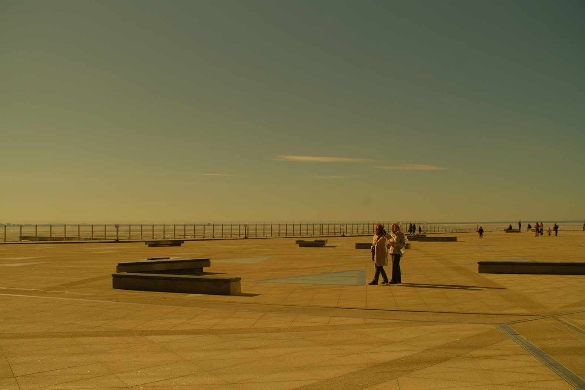
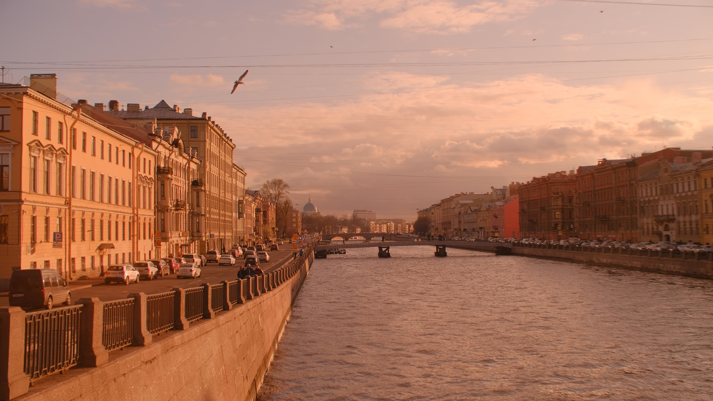
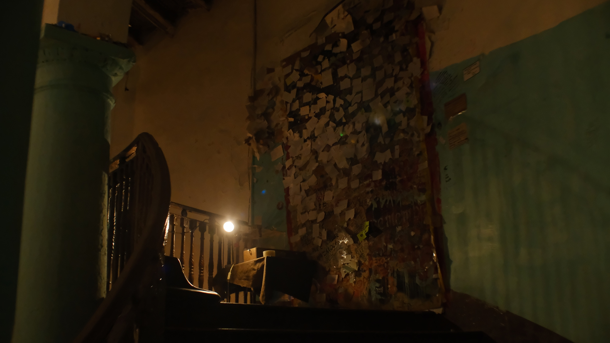
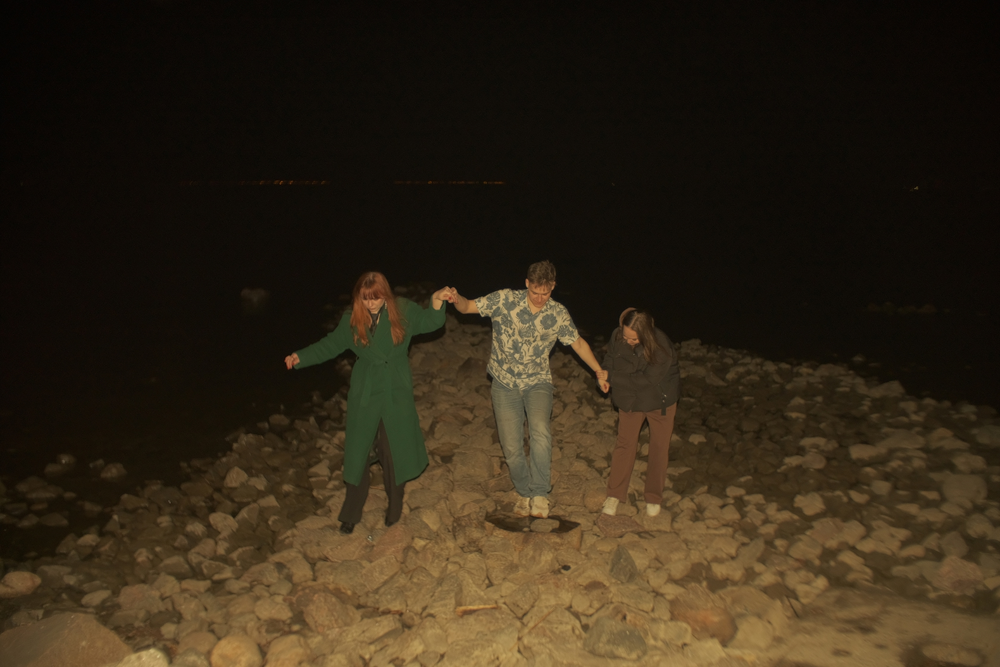

Что такое ностальгия
Ностальгия — это эмоциональное состояние, связанное с обращением к прошлому. Чаще всего она проявляется как тёплая тоска по определённому времени, месту или переживанию, которые воспринимаются как значимые или счастливые [1]. Сегодня ностальгия воспринимается как естественная часть человеческого опыта, однако изначально её понимали иначе.
Сегодня ностальгию определяют как форму эмоциональной памяти, которая помогает человеку ощущать непрерывность собственной жизни [2]. Она связывает прошлое и настоящее, создаёт ощущение устойчивости и личной истории.
Эволюция отношения к ностальгии
В XVIII–XIX веках ностальгию сопоставляли с депрессией и неврозами. В начале XX века психиатры продолжали относить её к симптомам психологического неблагополучия [2]. Однако со временем стало ясно, что ностальгия не всегда разрушительна.
Социологи и психологи обратили внимание на её конструктивные функции. Например, американский социолог Фред Дэвис, один из исследователей ностальгии как социального и культурного явления, в книге Yearning for Yesterday (1979) описал ностальгию как культурный феномен, связанный с ощущением изменений в обществе. Исследовательница культуры Светлана Бойм, занимавшаяся темой памяти, эмиграции и ностальгии, предложила различать два типа ностальгии: реставративную и рефлексивную [2]. Первая стремится восстановить «золотой век», вторая — осмысляет прошлое без попытки его вернуть.
Современные исследования подчёркивают позитивную роль ностальгии. Она укрепляет чувство принадлежности, поддерживает самооценку и помогает справляться со стрессом [1][2]. В сложные периоды обращение к приятным воспоминаниям может служить эмоциональной опорой.
При этом исследователи предупреждают о двойственной природе ностальгии. Если прошлое начинает восприниматься как единственно «правильное» состояние, а настоящее — как ухудшение, это может привести к снижению мотивации и эскапизму [3]. В здоровом варианте ностальгия не отрицает настоящее, а дополняет его.

Как работает память
Человеческая память не является точной записью событий. Это реконструкция, зависящая от текущего состояния и контекста. Социолог Морис Хальбвакс ещё в 1920-е годы показал, что воспоминания формируются под влиянием социальных рамок и интерпретаций [1].
Со временем неприятные детали часто сглаживаются, тогда как положительные моменты становятся ярче. Это явление называют эффектом «розовой ретроспекции» (rosy retrospection) – склонностью вспоминать прошлое более позитивно, чем оно воспринималось в момент события [4].
Например, человек может вспоминать студенческие годы как беззаботные и радостные, хотя в реальности они сопровождались стрессом, нехваткой денег и неопределённостью. Память не стирает трудности полностью, но меняет их эмоциональную окраску. Знание исхода событий (“всё закончилось хорошо“) снижает интенсивность пережитого напряжения [3].
С нейробиологической точки зрения воспоминания активируют зоны мозга, связанные с эмоциями. Поэтому ностальгические переживания ощущаются почти как повторное проживание момента [6].

Материальные «якоря» памяти
Интересно, что воспоминания редко существуют в изоляции. Они часто привязаны к объектам — фотографиям, письмам, предметам. Такие вещи выступают в роли триггеров памяти [5]. Старый снимок может восстановить в сознании детали, которые без него не вспоминались годами.
Физическая материальность усиливает эффект. Бумажная фотография, пожелтевшая от времени, воспринимается иначе, чем цифровой файл. Прикосновение к предмету создаёт ощущение связи с прошедшим моментом.
Это объясняет, почему люди сохраняют семейные альбомы, старые открытки, детские рисунки. Объекты становятся частью личной истории. Их утрата часто воспринимается болезненно — не только как потеря вещи, но и как утрата фрагмента памяти.

Ностальгия как культурное явление
Ностальгия проявляется не только индивидуально, но и коллективно. Поколения склонны идеализировать эпоху своей молодости или даже времена, в которых они не жили. Это видно в популярной культуре: возвращение моды 80-х, ретро-музыка, переиздания старых игр.
Появилось даже понятие «анемойя» – ностальгия по эпохе, которую человек не переживал лично [3]. Через фильмы, рассказы родителей и архивные материалы формируется эмоциональный образ прошлого, который воспринимается как знакомый.
Таким образом, ностальгия — это не просто чувство о конкретном событии. Это механизм, через который человек выстраивает свою связь со временем. Она помогает поддерживать идентичность, ощущение целостности и преемственности жизни.
